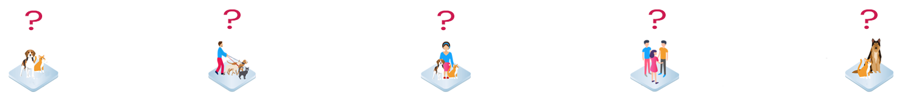

Frequently Asked Questions
よくある質問
ペットナンバープロジェクトに寄せられる、よくある質問について下記の回答をご確認ください。 お問い合わせもこちらより受け付けています。

 ペットナンバープロジェクトについて
ペットナンバープロジェクトについて
ペットナンバープロジェクトとは何ですか？
ペットナンバープロジェクトは、ブロックチェーン技術の透明性と追跡性を利用した分散型ペット登録システムを開発するプロジェクトです。私たちは現存するペット登録システムを分散型にし、共有データベースの構築や透明なペット流通追跡を可能にします。
ペットナンバープロジェクトの目的は何ですか？
ペットナンバープロジェクトの最大の目的は、より良い技術インフラストラクチャーを構築し、人間とペットが幸せに共生できる社会を創造することです。
ペットナンバーの利点は何ですか？
従来のペット登録システムと違い、ペットナンバープラットフォームは分散型です。すなわち、動物愛護団体、獣医、ペットショップ、ペットオーナー間での幅広いデータの共有が可能となり、里親を探しやボランティア探しを促進することができます。また、データは分散管理されているため、情報の相互監視が可能となり悪質なペットビジネスの公然化が可能となります。
どのように非人道的なペットビジネスを公然化するのですか？
私たちの分散型ペットレジストリーでは、全てのビジネスが登録済みで、全てのペット流通経路が透明となります。その結果、どのブリーダーが過剰生産を行い流通させているのか、どのペットショップが違法なビジネスに売れ残ったペットを流しているのか、流通経路に不自然な空白がないか等の監視が可能となります。
どのようにブロックチェーン技術を利用するのか？
ペットオーナー権の管理、また、透明性の高いペット流通構築のためにブロックチェーン技術を利用します。
既に私のペットはマイクロチップ番号を持っています、ペットナンバーを利用する必要性はありますか？
ペットナンバーを利用するだけで、健全なペットコミュニティの創造を促進し、違法または非人道的なペットビジネスの排除に貢献することができます。更に、ペットナンバーを利用する事により、ビッグデータを元にしたパーソナライズド・サポートやお得なペットサービス情報を受け取ることができます。
どうやってペットナンバー登録が出来きますか？
ペットナンバープラットフォーム公開後に、スマホ、携帯、またはペットレジ代理店を通し誰でも簡単に登録することができます。
どうやってコミュニティに参加できますか？
ペットナンバープロジェクトは、コミュニティの拡大を常に行っています。最新情報のアップデートは、Twitter、Facebookにて配信予定！
また、ペットナンバープロジェクトはプロジェクトアドバイザー、サポーター、専門家を探しています。もし私たちの理念に共感し、プロジェクト発展のためにご協力いただける場合には、info@petnumber.io、もしくはお問い合わせページよりご連絡お待ちしております。
ペットナンバーエージェントについて
ペットナンバーエージェントとは何ですか？
誰でもペットナンバーエージェントとなることができ、ペットナンバーエージェントはペット情報の提供と入力、ソーシャルメディアを使ったペットナンバーの紹介等を行い、分散型ペットレジストリーの構築に貢献する事ができます。
ペットナンバーエージェントになる利点とは？
ペッナンバーエージェントとして貢献したユーザーには、報酬としてPETTトークンが配布されます。
ペットナンバー代理店とは何ですか？
ペットナンバー代理店とは、私たちと理念を共にし、譲渡の促進やペットナンバーの普及に協力いただける、ペットナンバー公認のペットショップです。健全なペットコミュニティの構築や一般レベルでの譲渡の機会の提供は、全国のペットショップとの協力が不可欠だと私たちは考えています。
ペットナンバー代理店になる利点とは？（日本国内ペットショップのみ）
ペットナンバーの提案する新しい譲渡ビジネスモデルを構成する一員となり、もし、ペットナンバー代理店が保護犬猫の里親を見つけた場合には、ペット一匹につき２万円とPETTトークン報酬を得ることができます。
トークンについて。
PETNトークンとは何ですか？
PETNとは、ペットオーナー権移行の際にペットナンバーシステム内部のみで使用されるトークンです。
PETNトークンとは何ですか？
PETTは、ICO期間中に配布されるトークンであり、PETTはデジタル通貨としてペットナンバー登録、ペットナンバー提携サービス等にて使用する事ができます。
PETTの販売額はいくらですか？
１トークンあたり２５円で販売予定。＊現在調整中。
いつPETTトークンが購入できますか？
PETTトークンはICO期間中に購入が可能となり、ペットナンバープロジェクトは2019年居ないのICO開催を目指しています。
ブロックチェーンについて。
ブロックチェーンとは何ですか？
ブロックチェーンとは、透明で改ざん不可能な、インターネット上の分散型共有台帳システムです。
スマートコントラクトとは何ですか？
スマートコントラクトとはブロックチェーン上で機能するデジタル契約書であり、資産取引、通貨取引、サービス同意書等の用途で利用されています。
メディアお問い合わせ
ペットナンバーに興味があります、どのように連絡ができますか？
ペットナンバーはメディアを通した動物愛護プロモーションも、最も重要なポイントの一つだと考えています。media@petnumber.ioまたはお問い合わせページよりご連絡お待ちしております。